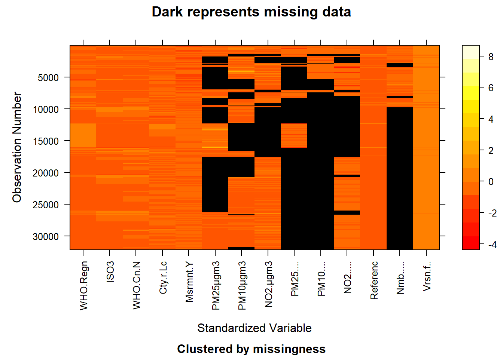
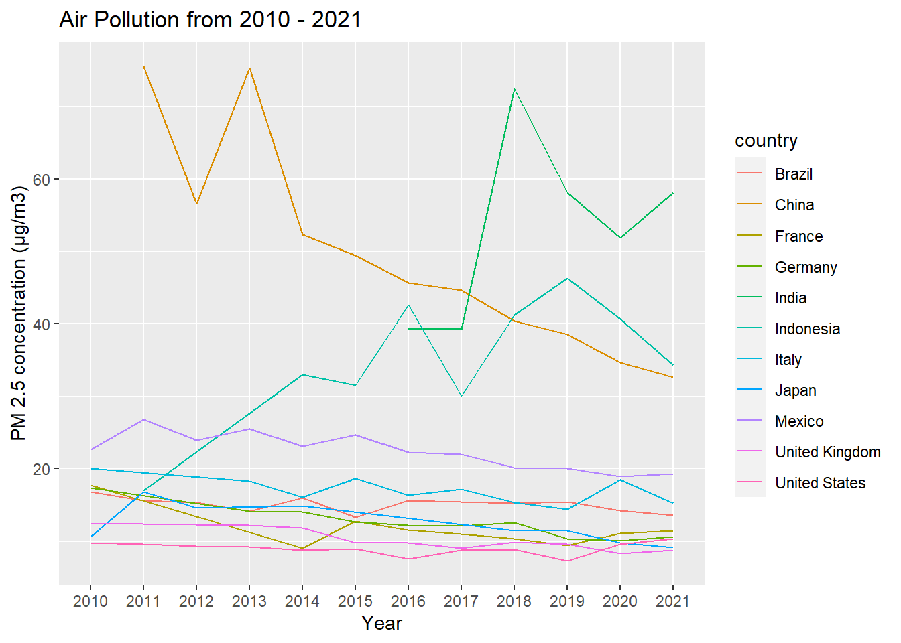
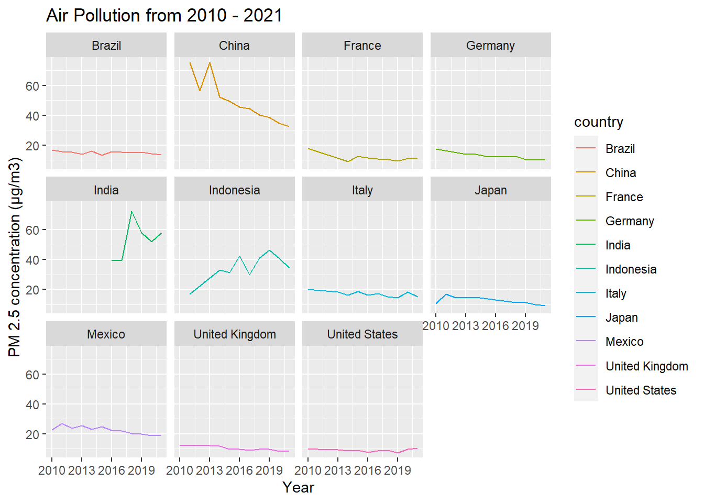
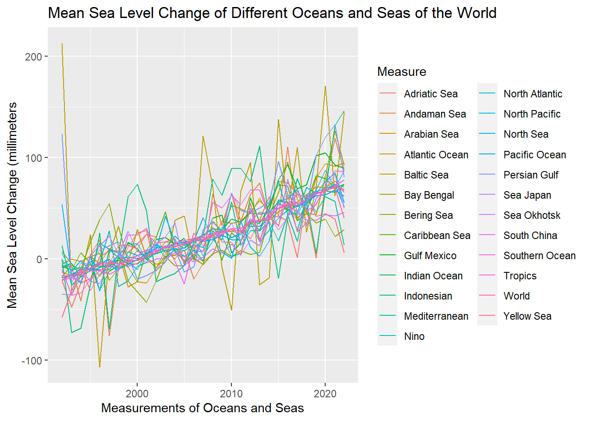
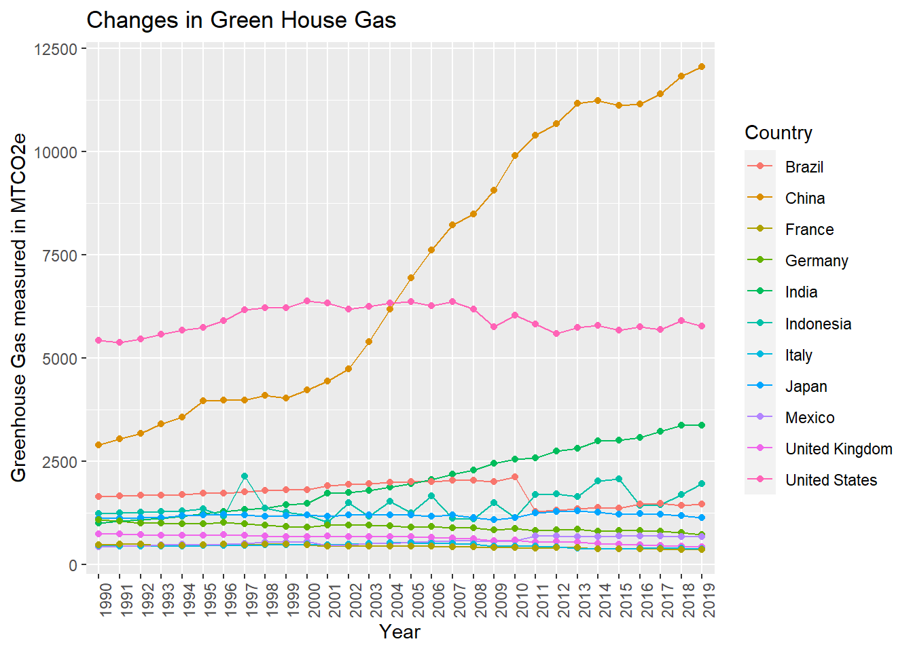

Chapter 4 Results
4.1 GDP
df_gdp <- read.csv("data/gdp.csv")
top10_gdp_2021 <- df_gdp[df_gdp$Subject == "Gross Domestic Product (GDP); millions" & df_gdp$TIME == 2021 & df_gdp$Measure == "USD, current prices, current PPPs",]
top10_gdp_2021[ order(top10_gdp_2021$Value,decreasing = TRUE), ][0:14,]## LOCATION Country SUBJECT Subject MEASURE Measure TIME
## 44648 OECD OECD - Total T_GDP Gross Domestic Product (GDP); millions CPC USD, current prices, current PPPs 2021
## 43634 G-7 G7 T_GDP Gross Domestic Product (GDP); millions CPC USD, current prices, current PPPs 2021
## 23980 USA United States T_GDP Gross Domestic Product (GDP); millions CPC USD, current prices, current PPPs 2021
## 50643 EU27_2020 European Union – 27 countries (from 01/02/2020) T_GDP Gross Domestic Product (GDP); millions CPC USD, current prices, current PPPs 2021
## 47400 EA19 Euro area (19 countries) T_GDP Gross Domestic Product (GDP); millions CPC USD, current prices, current PPPs 2021
## 26702 IND India T_GDP Gross Domestic Product (GDP); millions CPC USD, current prices, current PPPs 2021
## 11669 JPN Japan T_GDP Gross Domestic Product (GDP); millions CPC USD, current prices, current PPPs 2021
## 6828 DEU Germany T_GDP Gross Domestic Product (GDP); millions CPC USD, current prices, current PPPs 2021
## 27030 IDN Indonesia T_GDP Gross Domestic Product (GDP); millions CPC USD, current prices, current PPPs 2021
## 5944 FRA France T_GDP Gross Domestic Product (GDP); millions CPC USD, current prices, current PPPs 2021
## 24710 BRA Brazil T_GDP Gross Domestic Product (GDP); millions CPC USD, current prices, current PPPs 2021
## 23096 GBR United Kingdom T_GDP Gross Domestic Product (GDP); millions CPC USD, current prices, current PPPs 2021
## 10785 ITA Italy T_GDP Gross Domestic Product (GDP); millions CPC USD, current prices, current PPPs 2021
## 14279 MEX Mexico T_GDP Gross Domestic Product (GDP); millions CPC USD, current prices, current PPPs 2021
## Time Unit.Code Unit PowerCode.Code PowerCode Reference.Period.Code Reference.Period Value Flag.Codes Flags
## 44648 2021 USD US Dollar 6 Millions 67273433
## 43634 2021 USD US Dollar 6 Millions 45020341
## 23980 2021 USD US Dollar 6 Millions 23315100
## 50643 2021 USD US Dollar 6 Millions 21759094
## 47400 2021 USD US Dollar 6 Millions 17495016
## 26702 2021 USD US Dollar 6 Millions 9856675
## 11669 2021 USD US Dollar 6 Millions 5400596
## 6828 2021 USD US Dollar 6 Millions 4857465
## 27030 2021 USD US Dollar 6 Millions 3566265
## 5944 2021 USD US Dollar 6 Millions 3447940
## 24710 2021 USD US Dollar 6 Millions 3435882
## 23096 2021 USD US Dollar 6 Millions 3286242
## 10785 2021 USD US Dollar 6 Millions 2723375
## 14279 2021 USD US Dollar 6 Millions 2609520From the GDP dataset, we found that the top ten countries which have the highest GDP in 2021 (in USD, current prices, current PPPs) are: USA, India, Japan, Germany, Indonesia, France, Brazil, UK, Italy, Mexico. The dataset doesn’t contain China’s GDP value in 2021 (but does contain from 1970-2020); this is not reflected as a null value in the dataset. Since China’s GDP is also among the highest in the world before, we decided to include 11 countries: USA, India, Japan, Germany, Indonesia, France, Brazil, UK, Italy, Mexico, and China in our future analysis.
country_gdp = c("United States", "India", "Japan", "Germany", "Indonesia", "France", "Brazil", "United Kingdom", "Italy", "Mexico", "China (People's Republic of)")
fig_gdp2 <- ggplot( subset(df_gdp, Country %in% country_gdp & Subject %in% "Gross Domestic Product (GDP); millions" & Measure %in% "USD, current prices, current PPPs"), aes(x = Time, y = Value, color = Country, group = Country)) +
geom_line() +
labs(title = "GDP from 1970 - 2021",
x = "Year",
y = "GDP")
plot(fig_gdp2) From the plot, we can see that China and US’s GDP are much higher than other countries from 2010 to present. China’s GDP is relatively low before 1990, but it grows rapidly and exceeds US’s GDP from 2017 until present. India’s GDP is also growing rapidly in recent years. Other countries’ GDP are growing steadily.
From the plot, we can see that China and US’s GDP are much higher than other countries from 2010 to present. China’s GDP is relatively low before 1990, but it grows rapidly and exceeds US’s GDP from 2017 until present. India’s GDP is also growing rapidly in recent years. Other countries’ GDP are growing steadily.
4.2 Population
fig_pop1 <- ggplot( subset(df_gdp, Country %in% country_gdp & Subject %in% "Total population; persons; thousands"), aes(x = Time, y = Value, color = Country, group = Country)) +
geom_line() +
labs(title = "Population from 1970 - 2021",
x = "Year",
y = "Population")
plot(fig_pop1) China and India are the top 2 countries which have highest population and population growth rate from 1970 to 2021. China has about 1.42 billion people and India has 1.41 billion in 2021. US, Indonesia, and Brazil ranks the 3rd, 4th, and 5th by population. Other countries’ population grows steadily.
4.3 Air Pollution
air_combined <- read.csv("data/air_combined.csv")
ggplot( air_combined, aes(x = factor(year), y = value, color = country, group = country)) +
geom_line() +
labs(title = "Air Pollution from 2010 - 2021",
x = "Year",
y = "PM 2.5 concentration (μg/m3)")
ggplot( air_combined, aes(x = year, y = value, color = country, group = country)) +
geom_line() +
facet_wrap(~country) +
labs(title = "Air Pollution from 2010 - 2021",
x = "Year",
y = "PM 2.5 concentration (μg/m3)")There is a jump in India’s PM2.5 concentration before and after 2017, and the data is missing before 2016. It is reasonable that the data are inconsistent since the dataset is combined from two datasets. The data from other countries are consistent. From the IQAir website, the PM2.5 concentration from 0-5 μg/m3 meets WHO guidelines. We can see that China is the most polluted country before 2017, but the air pollution index continues decreasing and in 2021, China’s PM2.5 index is 32.6 μg/m3. India and Indonesia are the top 2 most polluted countries in 2021, with PM2.5 concentration 58.1 and 34.3 μg/m3. Other countries have relatively low air pollution.
Our analysis of this graph focus on the impact of Covid-19 on air pollution. Since during the pandemic, there are less outside activities. We compare the data before and after 2019 and see if there is a decreasing trend after Covid-19, as we expected. China and Indonesia’s air pollution value decrease rapidly; Brazil, Italy, Japan, and Mexico have a slight decrease; France, Germany, UK are steady; India and US’s air pollution value increase. The trend and the impact of Covid-19 are different for each country. Air pollution values are affected by multiple factors.
4.4 Carbon Dioxide
world_co2 = read.csv('data/Atmospheric_CO%E2%82%82_Concentrations.csv', stringsAsFactors = TRUE)
world_co2 = world_co2[, -c(1, 3, 4, 5, 7, 8, 9, 10)]
world_co2 = world_co2[world_co2$Unit == "Parts Per Million", ]
world_co2$Date = gsub("M","-", world_co2$Date)
g1 = ggplot(data = world_co2, aes(x = Date, y = Value)) +
geom_point() +
labs(title = "World Carbon Dioxide Concentration From 1958 to 2022",
x = "Year",
y = "Carbon Dioxide (Parts per Million)")
g2 = ggplot(data = world_co2[731:774,], aes(x = Date, y = Value)) +
geom_point() +
labs(title = "World Carbon Dioxide Concentration From 2019 to 2022",
x = "Year",
y = "Carbon Dioxide (Parts per Million)") +
theme(axis.text.x = element_text(angle = 90))
gridExtra::grid.arrange(g1, g2, nrow = 1)
One of the most indicative measurements to showcase Earth’s gradually changing climate is the concentration of carbon dioxide (taken at Mauna Loa, Hawaii). Since 1958, Mauna Loa was chosen as a long term monitoring site, due to its lack of vegetation and remote location far from other continents. As shown in the graphs above, the carbon dioxide concentration in the atmosphere has increased from around 313 parts per million in 1958 to over 420 parts per million in 2022. This increase can be attributed to the release of fossil fuels in the atmosphere, which has accelerated since the industrial revolution, and is one of contributors to global warming. In addition to the general pattern of increase exhibited by the graph on the left, the graph on the right displays the seasonality of carbon dioxide data. This curve (known as the Keeling Curve) shows a cyclic variation of about 6 ppm each calendar year, with a peak in May and a minimum in September. The variation is due to the uptake of carbon dioxide by the world’s land vegetation; from the maximum in May, the concentration decreases as new plant growth during Northern hemisphere’s spring and summer absorbs carbon dioxide through Photosynthesis.
This set of graphs also allows us to preface the analysis of this project - since climate data is inherently “noisy” and oftentimes seasonal, it is important to keep that in mind as you read through the document, as some patterns or conclusions may not be as definitive as we would have liked. Nonetheless, we do hope that this project serves it educational purpose on the factors that may affect climate change.
4.5 Temperature Change
temp_change = read.csv('data/Annual_Surface_Temperature_Change.csv', stringsAsFactors = TRUE)
temp_change = temp_change[, -c(3, 4, 5, 6 ,7 ,8 ,9, 10)]
temp_change = temp_change[, -c(1)]
temp_change_removed = na.omit(temp_change)
library(reshape2)
df_temp <- melt(subset(temp_change_removed, Country %in% c('United States', 'India', 'Japan', 'Germany', 'Indonesia', 'France', 'Brazil', 'United Kingdom', 'Italy', 'Mexico', 'China, P.R.: Mainland')), id.vars=c("Country"),value.name="Value", variable.name="Year")
df_temp_subset = subset(df_temp, Country %in% c('United States', 'India', 'Japan', 'Germany', 'Indonesia', 'France', 'Brazil', 'United Kingdom', 'Italy', 'Mexico', 'China, P.R.: Mainland'))
df_temp_subset$Year = substring(df_temp_subset$Year, 2)
df_temp_subset_average = df_temp_subset %>%
group_by(Country) %>%
summarise(average = mean(Value))
ggplot(data=df_temp_subset, aes(x=as.numeric(Year), y=Value, group = Country, colour = Country)) +
geom_line() +
geom_point() +
xlab('Year') +
ylab("Temperature Change in Degrees Celsius ") +
ggtitle("Temperature Change of 11 Countries (Top GDPs) from 1961-2021")
ggplot(data = df_temp_subset, aes(x = reorder(Country, Value, median), y = Value)) +
geom_boxplot() +
theme(axis.text.x = element_text(angle = 90))4.6 Sea Level Change
sea_level_change = read.csv("data/Change_in_Mean_Sea_Levels.csv", stringsAsFactors = TRUE)
sea_level_change = sea_level_change[, -c(1:10)]
ggplot(data = sea_level_change, aes(x = reorder(Measure, Value, median), y = Value)) +
geom_boxplot() +
theme(axis.text.x = element_text(angle = 90)) +
xlab("Measurements of Oceans and Seas") +
ylab("Mean Sea Level Change (millimeters")
interactive_sea = sea_level_change
interactive_sea$Date = substr(interactive_sea$Date, 1, 4)
interactive_sea_tidy = interactive_sea %>%
group_by(Date, Measure) %>%
summarise(Sea_lvl_change = mean(Value))
ggplot(data = interactive_sea_tidy, aes(x = as.numeric(Date), y = Sea_lvl_change, group = Measure, colour = Measure)) +
geom_line() +
xlab("Measurements of Oceans and Seas") +
ylab("Mean Sea Level Change (millimeters")ggplot(data = interactive_sea_tidy, aes(x = reorder(Measure, Sea_lvl_change, median), y = Sea_lvl_change)) +
geom_boxplot() +
theme(axis.text.x = element_text(angle = 90)) +
xlab("Measurements of Oceans and Seas") +
ylab("Mean Sea Level Change (millimeters")4.7 Temperature Change and GDP
df_temp_subset_1970 = df_temp_subset[df_temp_subset$Year >= 1970,]
df_temp_subset_1970$Country = as.character(df_temp_subset_1970$Country)
df_temp_subset_1970$Country[df_temp_subset_1970$Country == "China, P.R.: Mainland"] = "China (People's Republic of)"
df_gdp_chen = subset(df_gdp, Country %in% country_gdp & Subject %in% "Gross Domestic Product (GDP); millions" & Measure %in% "USD, current prices, current PPPs")
df_temp_subset_1970$Country = as.factor(df_temp_subset_1970$Country)
temperature_gdp = merge(df_temp_subset_1970, df_gdp_chen, by.x = c("Country", 'Year'), by.y = c('Country', "Time"))
ggplot(data = temperature_gdp, aes(x = Value.y, y = Value.x)) +
geom_point() +
geom_smooth(method = "lm") +
facet_wrap(~Country, scale="free_x") +
xlab("GDP") +
ylab("Temperature Change in Degrees Celsius")
ggplot(data = temperature_gdp, aes(x = Value.y, y = Value.x,)) +
geom_point() +
geom_smooth(method = "lm") +
xlab("GDP") +
ylab("Temperature Change in Degrees Celsius")
4.8 Temperature Change and Population
df_population = subset(df_gdp, Country %in% country_gdp & Subject %in% "Total population; persons; thousands")
temperature_population = merge(df_temp_subset_1970, df_population, by.x = c("Country", 'Year'), by.y = c('Country', "Time"))
ggplot(data = temperature_population, aes(x = Value.y, y = Value.x)) +
geom_point() +
geom_smooth(method = "lm") +
facet_wrap(~Country, scale="free_x") +
xlab("Population") +
ylab("Temperature Change in Degrees Celsius")ggplot(data = temperature_population, aes(x = Value.y, y = Value.x)) +
geom_point() +
xlab("Population") +
ylab("Temperature Change in Degrees Celsius")
4.9 Temperature Change, Population, GDP
library(GGally)
temp_gdp_pollution = merge(temperature_gdp, df_population, by.x = c("Country", 'Year'), by.y = c('Country', "Time"))
temp_gdp_pollution = temp_gdp_pollution[, c(1, 2, 3, 16, 31)]
colnames(temp_gdp_pollution) = c("Country", "Year", "Temperature Change", "GDP", "Population")
ggparcoord(temp_gdp_pollution, columns = 3:5, alpha = 0.5) 
ggparcoord(log(temp_gdp_pollution[, c(3,4, 5)]), alpha = 0.5, scale = "uniminmax")
4.10 Sea Level Change and Sea Ice
df_icevolume <- read.csv("Kelly_draft/PIOMAS_monthly.csv")
df_icevolume["average"] = rowMeans(df_icevolume[, -c(1)])
sea_level_change$Date = substring(sea_level_change$Date, 2)
sea_level_change$Date = gsub("/", "-", sea_level_change$Date)
sea_level_change$Date = as.Date(sea_level_change$Date, format = "%m-%d-%Y")
sl_group = sea_level_change %>%
group_by(Date) %>%
summarize(mean_change = mean(Value))
sl_group_new = sl_group
sl_group_new$Date = substring(sl_group_new$Date, 1, 4)
sl_group_new_tidy = sl_group_new %>%
group_by(Date) %>%
summarise(average = mean(mean_change))
colnames(sl_group_new_tidy) = c("year", 'Average_SL_Change')
i1 = ggplot(data = sl_group_new_tidy, aes(x = as.numeric(year), y = Average_SL_Change)) +
geom_point() +
xlab("Year") +
ylab("Sea Level Change (millimeters)") +
ggtitle("Changes in Mean Sea Level from 1992 to 2022")
df_icevolume_new = df_icevolume
df_icevolume_new = df_icevolume_new[df_icevolume_new$year >= 1992, ]
ice_sea = merge(sl_group_new_tidy, df_icevolume_new, by = "year")
ggplot(data = ice_sea, aes(average, Average_SL_Change)) +
geom_point() +
geom_smooth(method = "lm", se = FALSE) +
xlab("Changes in Sea Ice") +
ylab("Mean Sea Level Change") +
ggtitle("Scatterplot of Mean Sea Level Change v.s Sea Ice Change (1992-2021)")
fig3_icevolume <- ggplot(df_icevolume, aes(x=year,y=average)) +
geom_point() +
ggtitle("Change in Ice Volume") +
xlab("Year") + ylab("Ice Volume")
plot(fig3_icevolume)gridExtra::grid.arrange(i1, fig3_icevolume, nrow = 1)4.11 Temperature Change and Greenhouse Gases
df_temp_subset_1990 = df_temp_subset
df_temp_subset_1990 = df_temp_subset_1990[df_temp_subset_1990$Year >= 1990,]
df_temp_subset_1990$Country = as.character(df_temp_subset_1990$Country)
df_temp_subset_1990$Country[df_temp_subset_1990$Country == "China, P.R.: Mainland"] = "China"
df_ghg <- read.csv("Kelly_draft/ghg.csv")
ghg_chen = subset(df_ghg, Country %in% c("China","United States","India","France","Japan","Germany","Italy","United Kingdom","Mexico","Indonesia"))
ghg_chen <- ghg_chen %>% mutate_all(as.character) %>% pivot_longer(cols = -c("Country","Data.source","Sector","Gas","Unit"), names_to = "Year", values_to = "value", names_prefix = "X")
temp_ghg = merge(df_temp_subset_1990, ghg_chen, by.x = c("Country", "Year"), by.y = c("Country", "Year"))
temp_ghg$Year = as.factor(temp_ghg$Year)
ggplot(data = temp_ghg, aes(x = Value, y = as.numeric(value))) +
geom_line() +
facet_wrap(~Country,scale="free_y")
ggplot(data = temp_ghg, aes(x = Value, y = as.numeric(value))) +
geom_point() 
df_ghg <- read.csv("Kelly_draft/ghg.csv")
df_ghg1 <- subset(df_ghg, Country %in% c("China","United States","India","France","Japan","Germany","Italy","United Kingdom","Mexico","Indonesia","Brazil"))
df_ghg2 <- df_ghg1 %>% mutate_all(as.character) %>% pivot_longer(cols = -c("Country","Data.source","Sector","Gas","Unit"), names_to = "Year", values_to = "value", names_prefix = "X")
fig_ghg2 <- ggplot(df_ghg2, aes(x=Year,y=as.numeric(value), color=Country,group=Country)) +
geom_line() +
geom_point() + theme(axis.text.x = element_text(angle = 90)) +
ggtitle('Changes in Green House Gas') + xlab('Year')
plot(fig_ghg2)ggplot(df_ghg2,aes(x=Year,y=as.numeric(value),fill=Country))+geom_bar(stat='identity')
fig2_ghg_country <- ggplot(df_ghg2, aes(x=Year,y=as.numeric(value), group=Country)) +
geom_line() +
geom_point() + theme(axis.text.x = element_text(angle = 90)) + facet_wrap(~Country, scale="free_y",nrow=5) +
ggtitle('Changes in Green House Gas by Countries')
plot(fig2_ghg_country)# Agriculture and forestland
df_landuse <- read.csv("Kelly_draft/landuse.csv")
df_landuse_Agriculture <- subset(df_landuse, Area %in% c("China","United States of America","India","France","Japan","Germany","Italy","United Kingdom","Mexico","Indonesia","Brazil") & Item %in% "Agriculture")
fig4_Agriculture_country <- ggplot(df_landuse_Agriculture, aes(x=Year,y=as.numeric(Value),group=Area)) +
geom_line() +
geom_point() + facet_wrap(~Area, scale="free_y") + theme(axis.text.x = element_text(angle = 90)) +
ggtitle('Changes in Agricultural Area by Countries')
plot(fig4_Agriculture_country)
df_forest <- read.csv("Kelly_draft/forest.csv")
df_forest1 <- subset(df_forest, Area %in% c("China","United States of America","India","France","Japan","Germany","Italy","United Kingdom","Mexico","Indonesia","Brazil") & Item %in% "Forestland" & Element %in% "Area" & Source %in% "FAO TIER 1")
fig1_forest <- ggplot(df_forest1, aes(x=Year,y=as.numeric(Value),group=Area)) +
geom_line() +
geom_point() + facet_wrap(~Area, scale="free_y") +
ggtitle('Changes in Forest Area') + xlab('Year') + ylab('Forest Area / 1000 ha')
plot(fig1_forest)